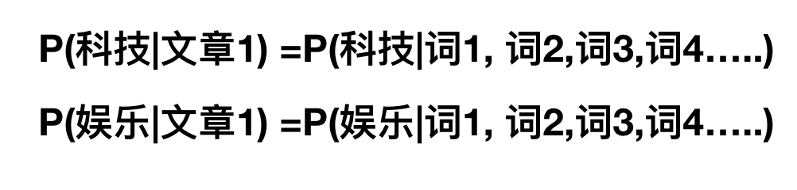

朴素贝叶斯
朴素贝叶斯 概述
贝叶斯分类是一类分类算法的总称，这类算法均以贝叶斯定理为基础，故统称为贝叶斯分类。本章首先介绍贝叶斯分类算法的基础——贝叶斯定理。最后，我们通过实例来讨论贝叶斯分类的中最简单的一种: 朴素贝叶斯分类。
概率基础
概率(Probability)定义
- 概率定义为一件事情发生的可能性
- 扔出一个硬币，结果头像朝上
- 某天是晴天
- $$P(X)$$ : 取值在[0, 1]
那么其中有些问题我们计算的结果不正确，或者不知道计算，我们有固定的公式去计算
条件概率与联合概率
- 联合概率：包含多个条件，且所有条件同时成立的概率
- 记作：$$P(A,B)$$
- 特性：$$P(A, B) = P(A)P(B)$$
- 条件概率：就是事件A在另外一个事件B已经发生条件下的发生概率
- 记作：$$P(A|B)$$
- 特性：$$P(A1,A2|B) = P(A1|B)P(A2|B)$$
注意：此条件概率的成立，是由于A1,A2相互独立的结果(记忆)
这样我们计算结果为： $$p(程序员, 匀称) = P(程序员)P(匀称) =3/7*(4/7) = 12/49 $$ $$P(产品, 超重|喜欢) = P(产品|喜欢)P(超重|喜欢)=1/2 * 1/4 = 1/8$$
那么，我们知道了这些知识之后，继续回到我们的主题中。朴素贝叶斯如何分类，这个算法经常会用在文本分类，那就来看文章分类是一个什么样的问题？

这个了类似一个条件概率，那么仔细一想，给定文章其实相当于给定什么？结合前面我们将文本特征抽取的时候讲的？所以我们可以理解为

但是这个公式怎么求？前面并没有参考例子，其实是相似的，我们可以使用贝叶斯公式去计算
朴素贝叶斯场景
机器学习的一个重要应用就是文档的自动分类。
在文档分类中，整个文档（如一封电子邮件）是实例，而电子邮件中的某些元素则构成特征。我们可以观察文档中出现的词，并把每个词作为一个特征，而每个词的出现或者不出现作为该特征的值，这样得到的特征数目就会跟词汇表中的词的数目一样多。
朴素贝叶斯是上面介绍的贝叶斯分类器的一个扩展，是用于文档分类的常用算法。下面我们会进行一些朴素贝叶斯分类的实践项目。
项目案例1: 屏蔽社区留言板的侮辱性言论
项目概述
构建一个快速过滤器来屏蔽在线社区留言板上的侮辱性言论。如果某条留言使用了负面或者侮辱性的语言，那么就将该留言标识为内容不当。对此问题建立两个类别: 侮辱类和非侮辱类，使用 1 和 0 分别表示。
开发流程
- 收集数据: 可以使用任何方法
- 准备数据: 从文本中构建词向量
- 分析数据: 检查词条确保解析的正确性
- 训练算法: 从词向量计算概率
- 测试算法: 根据现实情况修改分类器
- 使用算法: 对社区留言板言论进行分类
收集数据: 可以使用任何方法
#本例是我们自己构造的词表
#从numpy中导入所需的函数
from numpy import array,ones,log
#词表到向量的转换函数
def loadDataSet():
postingList = [['my','dog','has','flea','problems','help','please'],
['maybe','not','take','him','to','dog','park','stupid'],
['my','dalmation','is','so','cute','I','love','him'],
['stop','posting','stupid','worthless','garbage'],
['mr','licks','ate','my','steak','how','to','stop','him'],
['quit','buying','worthless','dog','food','stupid']]
classVec = [0,1,0,1,0,1] #1,侮辱 0,正常
return postingList,classVec
loadDataSet()
准备数据: 从文本中构建词向量
def createVocabList(dataSet):
vocabSet = set([]) #调用set方法,创建一个空集
for document in dataSet:
vocabSet = vocabSet | set(document) #创建两个集合的并集
return list(vocabSet)
def setOfWords2Vec(vocabList,inputSet):
returnVec = [0]*len(vocabList) #创建一个所含元素都为0的向量
for word in inputSet:
if word in vocabList:
returnVec[vocabList.index(word)] = 1
else:
print("the word:%s is not in my Vocabulary" % word)
return returnVec
def bagOfWords2VecMN(vocabList,inputSet):
returnVec = [0]*len(vocabList) #创建一个所含元素都为0的向量
for word in inputSet:
if word in vocabList:
returnVec[vocabList.index(word)] += 1
return returnVec
createVocabList,setOfWords2Vec,bagOfWords2VecMN
分析数据: 检查词条确保解析的正确性
检查函数执行情况，检查词表，不出现重复单词，需要的话，可以对其进行排序。
%pprint on
listOPosts, listClasses = loadDataSet()
myVocabList = createVocabList(listOPosts)
myVocabList
print(setOfWords2Vec(myVocabList, listOPosts[0]))
训练算法: 从词向量计算概率
现在已经知道了一个词是否出现在一篇文档中，也知道该文档所属的类别。接下来我们重写贝叶斯准则，将之前的 x, y 替换为 w. 粗体的 w 表示这是一个向量，即它由多个值组成。在这个例子中，数值个数与词汇表中的词个数相同。
重写贝叶斯准则
我们使用上述公式，对每个类计算该值，然后比较这两个概率值的大小。
问: 上述代码实现中，为什么没有计算P(w)？
答：根据上述公式可知，我们右边的式子等同于左边的式子，由于对于每个ci，P(w)是固定的。并且我们只需要比较左边式子值的大小来决策分类，那么我们就可以简化为通过比较右边分子值得大小来做决策分类。
首先可以通过类别 i (侮辱性留言或者非侮辱性留言)中的文档数除以总的文档数来计算概率 p(ci) 。接下来计算 p(w | ci) ，这里就要用到朴素贝叶斯假设。如果将 w 展开为一个个独立特征，那么就可以将上述概率写作 p(w0, w1, w2...wn | ci) 。这里假设所有词都互相独立，该假设也称作条件独立性假设（例如 A 和 B 两个人抛骰子，概率是互不影响的，也就是相互独立的，A 抛 2点的同时 B 抛 3 点的概率就是 1/6 * 1/6），它意味着可以使用 p(w0 | ci)p(w1 | ci)p(w2 | ci)...p(wn | ci) 来计算上述概率，这样就极大地简化了计算的过程。
朴素贝叶斯分类器训练函数
#朴素贝叶斯分类器训练集
def trainNB0(trainMatrix,trainCategory): #传入参数为文档矩阵，每篇文档类别标签所构成的向量
numTrainDocs = len(trainMatrix) #文档矩阵的长度
numWords = len(trainMatrix[0]) #第一个文档的单词个数
pAbusive = sum(trainCategory)/float(numTrainDocs) #任意文档属于侮辱性文档概率
#p0Num = zeros(numWords);p1Num = zeros(numWords) #初始化两个矩阵，长度为numWords，内容值为0
p0Num = ones(numWords);p1Num = ones(numWords) #初始化两个矩阵，长度为numWords，内容值为1
#p0Denom = 0.0;p1Denom = 0.0 #初始化概率
p0Denom = 2.0;p1Denom = 2.0
for i in range(numTrainDocs):
if trainCategory[i]==1:
p1Num +=trainMatrix[i]
p1Denom += sum(trainMatrix[i])
else:
p0Num +=trainMatrix[i]
p0Denom += sum(trainMatrix[i])
#p1Vect = p1Num/p1Denom #对每个元素做除法
#p0Vect = p0Num/p0Denom
p1Vect = log(p1Num/p1Denom)
p0Vect = log(p0Num/p0Denom)
return p0Vect,p1Vect,pAbusive
trainNB0
测试算法: 根据现实情况修改分类器
在利用贝叶斯分类器对文档进行分类时，要计算多个概率的乘积以获得文档属于某个类别的概率，即计算 p(w0|1) * p(w1|1) * p(w2|1)。如果其中一个概率值为 0，那么最后的乘积也为 0。为降低这种影响，可以将所有词的出现数初始化为 1，并将分母初始化为 2 （取1 或 2 的目的主要是为了保证分子和分母不为0，大家可以根据业务需求进行更改）。
另一个遇到的问题是下溢出，这是由于太多很小的数相乘造成的。当计算乘积 p(w0|ci) * p(w1|ci) * p(w2|ci)... p(wn|ci) 时，由于大部分因子都非常小，所以程序会下溢出或者得到不正确的答案。（用 Python 尝试相乘许多很小的数，最后四舍五入后会得到 0）。一种解决办法是对乘积取自然对数。在代数中有 ln(a * b) = ln(a) + ln(b), 于是通过求对数可以避免下溢出或者浮点数舍入导致的错误。同时，采用自然对数进行处理不会有任何损失。
下图给出了函数 f(x) 与 ln(f(x)) 的曲线。可以看出，它们在相同区域内同时增加或者减少，并且在相同点上取到极值。它们的取值虽然不同，但不影响最终结果。
#朴素贝叶斯分类函数
def classifyNB(vec2Classify,p0Vec,p1Vec,pClass1):
p1 = sum(vec2Classify * p1Vec) + log(pClass1) #元素相乘
p0 = sum(vec2Classify * p0Vec) + log(1.0 - pClass1)
if p1>p0:
return 1
else:
return 0
def testingNB(testinput):
listOPosts,listClasses = loadDataSet() #产生文档矩阵和对应的标签
myVocabList = createVocabList(listOPosts) #创建并集
trainMat = [] #创建一个空的列表
for postinDoc in listOPosts:
trainMat.append(setOfWords2Vec(myVocabList,postinDoc)) #使用词向量来填充trainMat列表
p0V,p1V,pAb = trainNB0(array(trainMat),array(listClasses)) #训练函数
thisDoc = array(setOfWords2Vec(myVocabList,testinput)) #声明矩阵
print(testinput,'classified as:',classifyNB(thisDoc,p0V,p1V,pAb))
classifyNB,testingNB
使用算法: 对社区留言板言论进行分类
testingNB(['love','my','dalmation'])
总结
- 优点：
- 朴素贝叶斯模型发源于古典数学理论，有稳定的分类效率。
- 对缺失数据不太敏感，算法也比较简单，常用于文本分类。
- 分类准确度高，速度快
- 缺点：
- 由于使用了样本属性独立性的假设，所以如果特征属性有关联时其效果不好
作业：
- 说明条件概率与联合概率
- 说明贝叶斯公式、以及特征独立的关系
- 记忆贝叶斯公式
- 知道拉普拉斯平滑系数
- 应用贝叶斯公式实现概率的计算